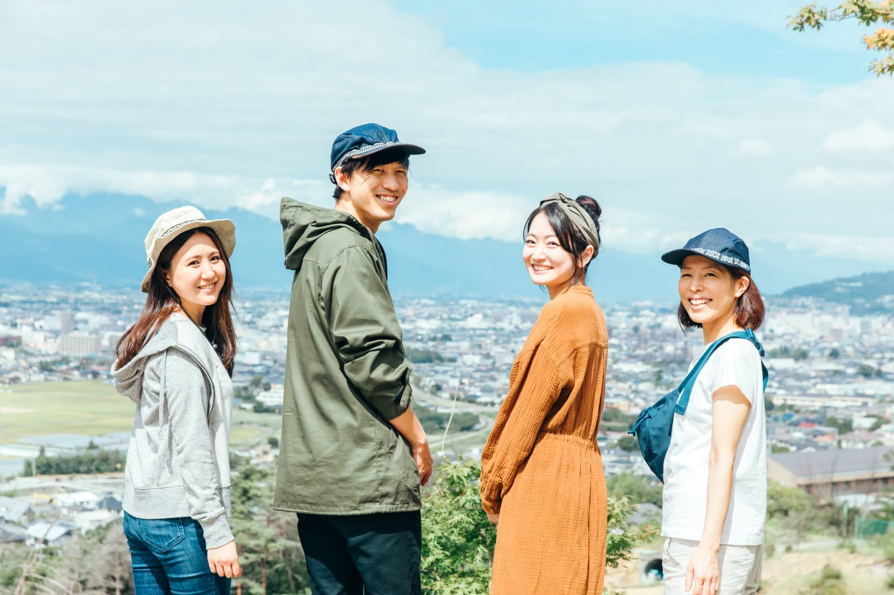

{{ d.img }}
{{ d.name }}
{{ d.body }}
学べること
めざす進路の例：{{ d.careers }}
{{ f.lead }}
{{ d.body }}
学べること
めざす進路の例：{{ d.careers }}
先生との距離が近い

1年次から少人数のゼミに所属し、発言し議論する経験を重ねます。
学部の枠をこえて
データサイエンスやジェンダー研究など、全学部から履修できる科目群です。
教室の外へ

地域や企業と連携した課題解決型の学びで、研究の楽しさを体験します。